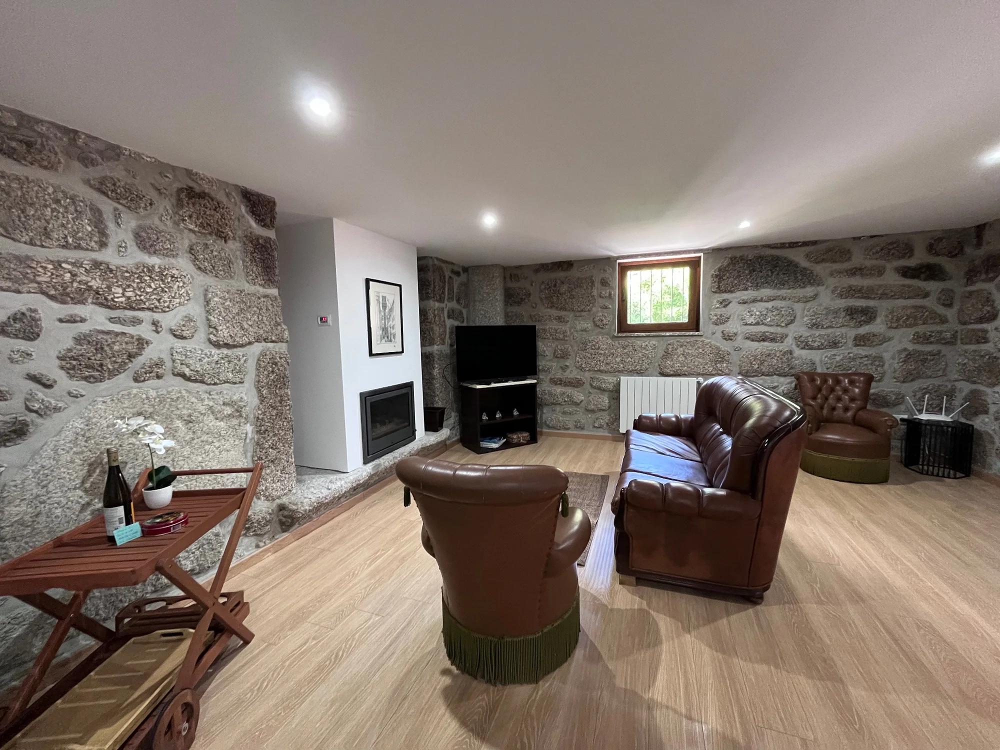
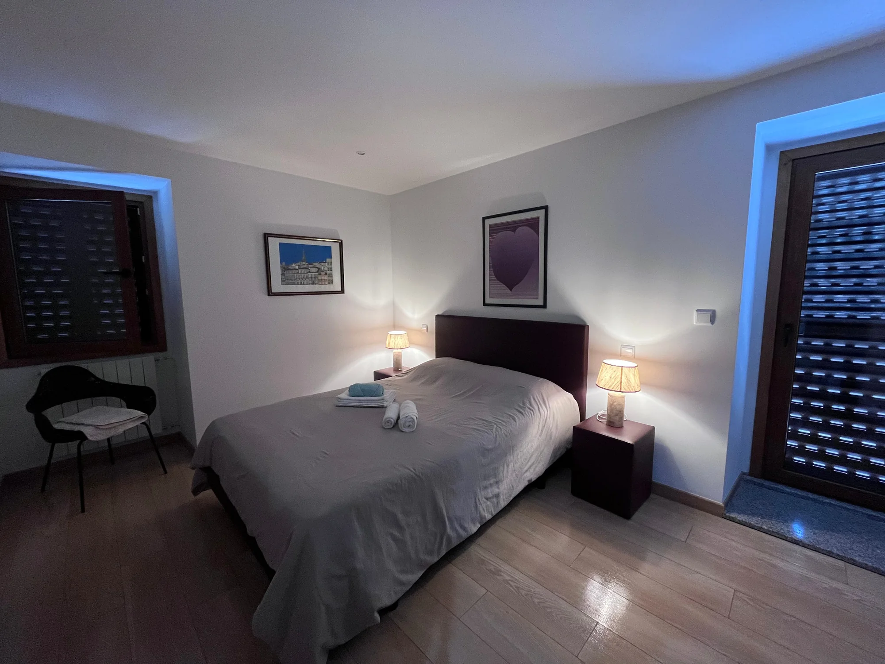

Alojamento disponível
Casa do Visconde
Uma casa de pedra recuperada, onde os materiais tradicionais convivem com uma cozinha equipada, duas casas de banho modernas, uma sala com lareira e um amplo espaço exterior.
- 2 quartos
- 2 casas de banho
- Cozinha equipada
- Sala com lareira
- Terraço
- Estacionamento
- Wi-Fi
- Animais bem-vindos